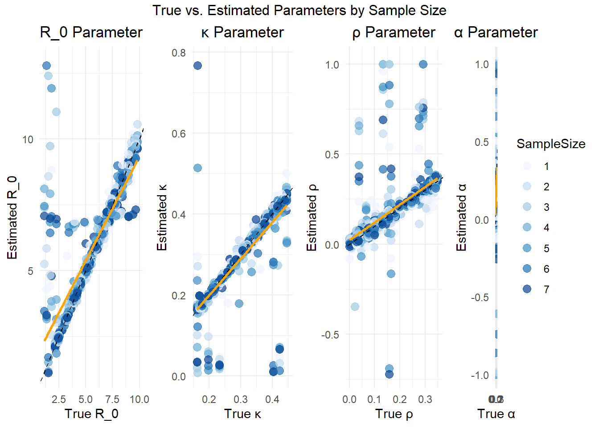
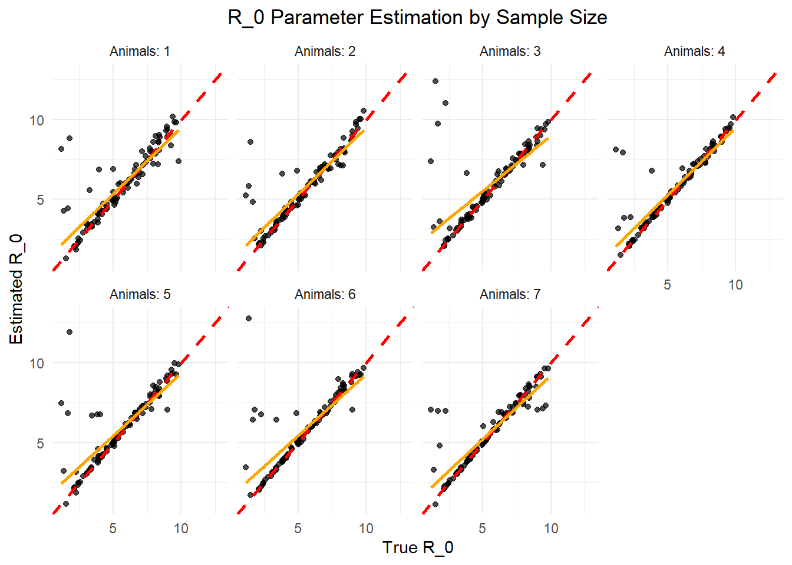
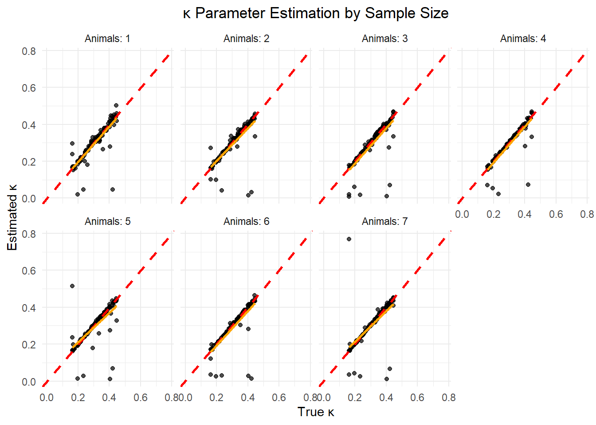
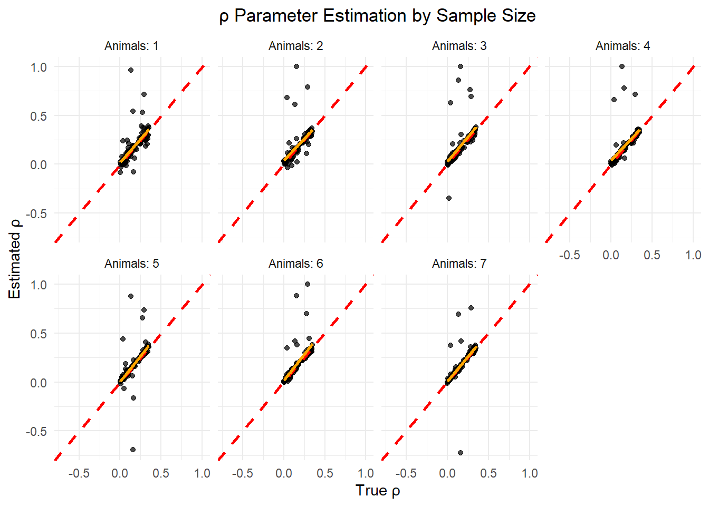
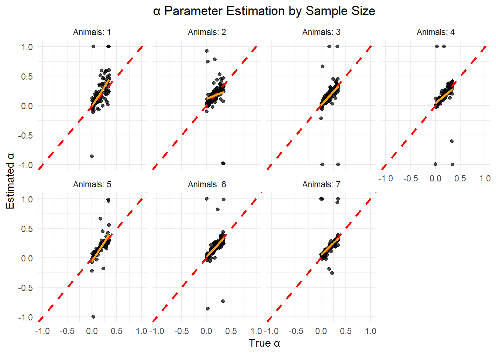

Lassa virus (LASV) is endemic to West Africa, where it is responsible for causing a potentially severe hemorrhagic fever in humans. The primary reservoir of LASV is the rodent Mastomys natalensis, with transmission to humans occurring through contact with the animal’s contaminated urine, feces, blood, or tissue. According to estimates from the World Health Organization (WHO), LASV is responsible for approximately 300,000 cases of illness and 5,000 deaths annually across West Africa. In Nigeria, a significant outbreak in 2022 resulted in 1,067 confirmed cases and 189 fatalities, yielding a case fatality rate (CFR) of 17.7%. By March 2023, there were 784 confirmed cases and 142 deaths in the country. Furthermore, the virus has spread westward, notably into Ghana, where a recent outbreak led to 14 confirmed cases, 97 traced contacts, and one death. Lassa fever continues to be a major public health concern, particularly in impoverished communities in West Africa. Its persistent spread westward underscores the critical need for intensified research efforts and the implementation of effective control measures.
Show the code
# Prepare data for mapmap_data <- lassa_data %>%group_by(country, city, lat, long) %>%summarize(total_cases =n(),human_cases =sum(host =="human"),rodent_cases =sum(host =="rodent"),avg_fitness =mean(fitness),.groups ='drop' )# Create a color palette for the number of casespal <-colorBin(palette ="YlOrRd", domain = map_data$total_cases,bins =7)# Create the maplassa_map <-leaflet(map_data) %>%addTiles() %>%# Add default OpenStreetMap tilessetView(lng =0, lat =8, zoom =5) %>%# Center on West Africa# Add circle markers for each cityaddCircleMarkers(~long, ~lat,radius =~sqrt(total_cases)/3, # Size based on sqrt of casescolor ="black",weight =1,fillColor =~pal(total_cases),fillOpacity =0.7,popup =~paste("<strong>", city, ", ", country, "</strong><br>","Total cases: ", total_cases, "<br>","Human cases: ", human_cases, "<br>","Rodent cases: ", rodent_cases, "<br>","Avg. fitness: ", round(avg_fitness, 2) ) ) %>%# Add a legendaddLegend(position ="bottomright",pal = pal,values =~total_cases,title ="Total Cases",opacity =0.7 )# Save the mapsaveWidget(lassa_map, "lassa_geographic_map.html", selfcontained =TRUE)# Display the maplassa_map
Given the absence of a human vaccine for LASV, current interventions focus on reducing contact between humans and infected animals, either through behavioral changes or through the mass culling of the rodent reservoir. An alternative and promising approach involves the use of transmissible vaccines to rapidly establish immunity within wild animal reservoir populations, thereby reducing the prevalence of the virus. The key advantage of transmissible vaccines lies in their potential to limit the occurrence of spillover events from rodent reservoirs to human populations while conserving ecological biodiversity. The proposed research seeks to address the urgent need for effective control strategies against LASV in West Africa by evaluating the potential impact of a transmissible vaccine. A prototype transmissible vaccine for LASV has been developed, and the next crucial step involves predicting its efficacy in reducing viral spillover into human populations, particularly in regions such as Western Nigeria and Ghana, where the virus is expanding its range. This objective will be accomplished through the pursuit of the following aims:
Develop and parameterize a within-host models for vaccine replication, immune response, and evolutionary dynamics.
Recombinant Vector Vaccines
Our collaborators in the University of Western Australia run the murine model of Lassa virus infection. The data from this model is used for this study. The following is the mathematical model used for this study:
In this study, I will walk you through my parameter estimation methods and visualizations I have made.
Parameter Estimation
The parameters of interest in this study are the basic reproduction number (\(R_0\)), the rate of infection (\(\kappa\)), the fitness cost associated with carrying a transgene (\(\rho\)), and the additional rate of clearance (\(\alpha\)). The following code conducts 100 simulation runs, each using a unique combination of parameter values randomly selected from a predefined parameter space. Synthetic data are generated for each simulation, from which observational samples are subsequently drawn.
Show the code
### Model definitionmodel <-function(times, state, params) {with(as.list(c(state, params)), { dS <--Kappa * Ro * S * I1 / S0 - Kappa * (1- Rho) * Ro * S * I2 / S0 dI1 <- Kappa * Ro * S * I1 / S0 - Kappa * I1 dI2 <- Kappa * Ro * (1- Rho) * S * I2 / S0 - (1+ Alpha) * Kappa * I2list(c(dS, dI1, dI2)) })}### Simulation parametersset.seed(5)times <-seq(0, 56, by =1)sigma <-0.2# Standard deviation for lognormal noise shcc <-1.2# Shedding coefficientSimSet <-100# Number of simulationslod <-3# Limit of detectionS0 <-1e8# Initial susceptible population# Sample sizes to test (number of animals)sample_sizes <-c(1, 2, 3, 4, 5, 6, 7)### Generate simulated datasetsgenerate_simulation <-function(i) { Ro <-runif(1, 1, 10) Kappa <-runif(1, 0.15, 0.45) Rho <-runif(1, 0, 0.35) Alpha <-runif(1, 0, 0.35) I10 <-sample(1:1000, 1) I20 <-sample(1:1000, 1) state <-c(S = S0, I1 = I10, I2 = I20) out_df <-as.data.frame(ode(y = state, times = times, func = model, parms =c(Ro = Ro, Kappa = Kappa, Rho = Rho, Alpha = Alpha, S0 = S0))) out_df$S[out_df$S <0] <-0 out_df$I1[out_df$I1 <=0] <-0 out_df$I2[out_df$I2 <=0] <-0 out_df <- out_df %>%mutate(SimSet = i, Beta = Kappa * Ro / S0, Kappa = Kappa, Rho = Rho, Ro = Ro,Alpha = Alpha,I1_trans =log10(I1 * shcc), I2_trans =log10(I2 * shcc))return(out_df)}# Run simulationssim_data <-lapply(1:SimSet, generate_simulation)SimData <-bind_rows(sim_data)# Save the simulated data#saveRDS(SimData, file = "C:/Users/jakes/Downloads/ProjectR/Data/Sim_Data.rds")# Generate focal datasets with raw observationscreate_focal_datasets <-function(df, sample_sizes) { focal_base <- df %>%filter(time %%4==0) focal_datasets <-list()for (n in sample_sizes) { focal <- focal_basefor (j in1:n) { focal[[paste0("I1_sample_", j)]] <-rnorm(nrow(focal), mean = focal$I1_trans, sd = sigma) focal[[paste0("I2_sample_", j)]] <-rnorm(nrow(focal), mean = focal$I2_trans, sd = sigma) } focal$sample_size <- n focal_datasets[[as.character(n)]] <- focal }return(focal_datasets)}# Apply to all simulationsFocal_by_sample <-list()for (i in1:SimSet) { Focal_by_sample[[i]] <-create_focal_datasets(sim_data[[i]], sample_sizes)}## Save focal datasets#saveRDS(Focal_by_sample, file = "C:/Users/jakes/Downloads/ProjectR/Data/Focal_by_sample.rds")
We use maximum likelihood estimation (MLE) to estimate the parameters of interest. The MLE essentially measures the likelihood of observing the data given a set of parameters. The goal is to find the parameter values that maximize this likelihood function. In this case, we are interested in estimating the parameters \(R_0\), \(\kappa\), \(\rho\), and \(\alpha\) based on the simulated data. We used the optimx function to perform the optimization. The optimx function is a wrapper around several optimization algorithms, allowing for more flexibility and options compared to the base R optim function. We used the nlminb method, which is suitable for bounded optimization problems.
# Load the resultsResults <-readRDS("Results.rds")
See the results of the parameter estimation below. The results are saved in a data frame called Results. The columns include the simulation set number, sample size, true and estimated values of the parameters, and the negative log-likelihood (NLL) value.
Let’s make our next visualization. A plot of the estimated parameters against the true parameters. The points are colored by sample size. The dashed line represents a 1:1 relationship, indicating perfect estimation.
Show the code
plot_comparison <-function(results_df, sample_sizes) { results_df$SampleSize <-factor(results_df$SampleSize)# Create plot for Ro p1 <-ggplot(data = results_df, aes(x = True_Ro, y = Est_Ro, color = SampleSize)) +geom_point(alpha =0.7, size =3) +geom_abline(slope =1, intercept =0, color ="black", linetype ="dashed") +geom_smooth(method ="lm", se =FALSE, color ="orange", linetype ="solid") +# Best fit linescale_color_brewer(palette ="Blues", direction =1) +labs(x ="True R_0", y ="Estimated R_0", title ="R_0 Parameter") +theme_minimal() +coord_cartesian(xlim =c(min(results_df$True_Ro, na.rm =TRUE) *0.99, max(results_df$True_Ro, na.rm =TRUE) *1.01),ylim =c(min(results_df$Est_Ro, na.rm =TRUE) *0.99, max(results_df$Est_Ro, na.rm =TRUE) *1.01) ) +theme(plot.title =element_text(hjust =0.5),legend.position ="none")# Create plot for Kappa p2 <-ggplot(data = results_df, aes(x = True_Kappa, y = Est_Kappa, color = SampleSize)) +geom_point(alpha =0.7, size =3) +geom_abline(slope =1, intercept =0, color ="black", linetype ="dashed") +geom_smooth(method ="lm", se =FALSE, color ="orange", linetype ="solid") +# Best fit linescale_color_brewer(palette ="Blues", direction =1) +labs(x ="True κ", y ="Estimated κ", title ="κ Parameter") +theme_minimal() +coord_cartesian(xlim =c(min(results_df$True_Kappa, na.rm =TRUE) *0.99, max(results_df$True_Kappa, na.rm =TRUE) *1.01),ylim =c(min(results_df$Est_Kappa, na.rm =TRUE) *0.99, max(results_df$Est_Kappa, na.rm =TRUE) *1.01) ) +theme(plot.title =element_text(hjust =0.5),legend.position ="none")# Create plot for Rho p3 <-ggplot(data = results_df, aes(x = True_Rho, y = Est_Rho, color = SampleSize)) +geom_point(alpha =0.7, size =3) +geom_abline(slope =1, intercept =0, color ="black", linetype ="dashed") +geom_smooth(method ="lm", se =FALSE, color ="orange", linetype ="solid") +# Best fit linescale_color_brewer(palette ="Blues", direction =1) +labs(x ="True ρ", y ="Estimated ρ", title ="ρ Parameter") +theme_minimal() +coord_cartesian(xlim =c(min(results_df$True_Rho, na.rm =TRUE) *0.99, max(results_df$True_Rho, na.rm =TRUE) *1.01),ylim =c(min(results_df$Est_Rho, na.rm =TRUE) *0.99, max(results_df$Est_Rho, na.rm =TRUE) *1.01) ) +theme(plot.title =element_text(hjust =0.5),legend.position ="none")# Create plot for Alpha p4 <-ggplot(data = results_df, aes(x = True_Alpha, y = Est_Alpha, color = SampleSize)) +geom_point(alpha =0.7, size =3) +geom_abline(slope =1, intercept =0, color ="black", linetype ="dashed") +geom_smooth(method ="lm", se =FALSE, color ="orange", linetype ="solid") +# Best fit linescale_color_brewer(palette ="Blues", direction =1) +labs(x ="True α", y ="Estimated α", title ="α Parameter") +theme_minimal() +coord_cartesian(xlim =c(min(results_df$True_Alpha, na.rm =TRUE) *0.99, max(results_df$True_Alpha, na.rm =TRUE) *1.01),ylim =c(min(results_df$Est_Alpha, na.rm =TRUE) *0.99, max(results_df$Est_Alpha, na.rm =TRUE) *1.01) ) +theme(plot.title =element_text(hjust =0.5))# Arrange plots with a shared legend combined_plot <-grid.arrange(p1, p2, p3, p4, nrow =1,top ="True vs. Estimated Parameters by Sample Size",widths =c(1, 1, 1, 1))# Create faceted plots by sample size to show improvement facet_plots <-list()for (param inc("Ro", "Kappa", "Rho", "Alpha")) {# Column names for true and estimated values true_col <-paste0("True_", param) est_col <-paste0("Est_", param)# Set title label with proper formattingif (param =="Ro") { title_label <-"R_0" } elseif (param =="Kappa") { title_label <-"κ" } elseif (param =="Rho") { title_label <-"ρ" } else { title_label <-"α" }# Create plot p <-ggplot(data = results_df, aes_string(x = true_col, y = est_col)) +geom_point(alpha =0.7) +geom_abline(slope =1, intercept =0, color ="red", linetype ="dashed", linewidth =1.0) +geom_smooth(method ="lm", se =FALSE, color ="orange", linetype ="solid") +# Best fit linefacet_wrap(~ SampleSize, nrow =2, ncol =4,labeller =labeller(SampleSize =function(x) paste("Animals:", x))) +labs(x =paste("True", title_label),y =paste("Estimated", title_label),title =paste(title_label, "Parameter Estimation by Sample Size")) +theme_minimal() +coord_cartesian(xlim =c(min(results_df[[est_col]], na.rm =TRUE) *0.99, max(results_df[[est_col]], na.rm =TRUE) *1.01),ylim =c(min(results_df[[est_col]], na.rm =TRUE) *0.99, max(results_df[[est_col]], na.rm =TRUE) *1.01) ) +theme(plot.title =element_text(hjust =0.5)) facet_plots[[param]] <- p }# Return both plot typesreturn(list(combined = combined_plot,faceted = facet_plots))}parameter_plots <-plot_comparison(Results, sample_sizes)
`geom_smooth()` using formula = 'y ~ x'
`geom_smooth()` using formula = 'y ~ x'
`geom_smooth()` using formula = 'y ~ x'
`geom_smooth()` using formula = 'y ~ x'

Warning: `aes_string()` was deprecated in ggplot2 3.0.0.
ℹ Please use tidy evaluation idioms with `aes()`.
ℹ See also `vignette("ggplot2-in-packages")` for more information.
Show the code
# Display the combined plotprint(parameter_plots$combined)
# Display faceted plots for each parameterprint(parameter_plots$faceted$Ro)
`geom_smooth()` using formula = 'y ~ x'

Show the code
print(parameter_plots$faceted$Kappa)
`geom_smooth()` using formula = 'y ~ x'

Show the code
print(parameter_plots$faceted$Rho)
`geom_smooth()` using formula = 'y ~ x'

Show the code
print(parameter_plots$faceted$Alpha)
`geom_smooth()` using formula = 'y ~ x'

Source Code
---title: "Midterm and Final Project"author: "Justice Kessie"date: "2025-03-24"categories: [news, code, analysis]image: "image.jpg"format: html: code-fold: true code-tools: true code-summary: "Show the code" # Optional: label for collapsed code---```{r, include=FALSE}# Load required librarieslibrary(tidyverse)library(lubridate)library(leaflet)library(htmlwidgets)library(plotly)library(igraph)library(ape)library(phangorn)library(RColorBrewer)library(leaflet.extras)library(rJava)library(dplyr)library(gridExtra)# Load the datalassa_data <- read.csv('lassa_virus_simulation_data.csv')# Convert date column to Datelassa_data$date <- as.Date(lassa_data$date)```### Description of DataLassa virus (LASV) is endemic to West Africa, where it is responsible for causing a potentially severe hemorrhagic fever in humans. The primary reservoir of LASV is the rodent *Mastomys natalensis*, with transmission to humans occurring through contact with the animal’s contaminated urine, feces, blood, or tissue. According to estimates from the World Health Organization (WHO), LASV is responsible for approximately 300,000 cases of illness and 5,000 deaths annually across West Africa. In Nigeria, a significant outbreak in 2022 resulted in 1,067 confirmed cases and 189 fatalities, yielding a case fatality rate (CFR) of 17.7%. By March 2023, there were 784 confirmed cases and 142 deaths in the country. Furthermore, the virus has spread westward, notably into Ghana, where a recent outbreak led to 14 confirmed cases, 97 traced contacts, and one death. Lassa fever continues to be a major public health concern, particularly in impoverished communities in West Africa. Its persistent spread westward underscores the critical need for intensified research efforts and the implementation of effective control measures.1. <div>```{r} # Prepare data for map map_data <- lassa_data %>% group_by(country, city, lat, long) %>% summarize( total_cases = n(), human_cases = sum(host == "human"), rodent_cases = sum(host == "rodent"), avg_fitness = mean(fitness), .groups = 'drop' ) # Create a color palette for the number of cases pal <- colorBin( palette = "YlOrRd", domain = map_data$total_cases, bins = 7 ) # Create the map lassa_map <- leaflet(map_data) %>% addTiles() %>% # Add default OpenStreetMap tiles setView(lng = 0, lat = 8, zoom = 5) %>% # Center on West Africa # Add circle markers for each city addCircleMarkers( ~long, ~lat, radius = ~sqrt(total_cases)/3, # Size based on sqrt of cases color = "black", weight = 1, fillColor = ~pal(total_cases), fillOpacity = 0.7, popup = ~paste( "<strong>", city, ", ", country, "</strong><br>", "Total cases: ", total_cases, "<br>", "Human cases: ", human_cases, "<br>", "Rodent cases: ", rodent_cases, "<br>", "Avg. fitness: ", round(avg_fitness, 2) ) ) %>% # Add a legend addLegend( position = "bottomright", pal = pal, values = ~total_cases, title = "Total Cases", opacity = 0.7 ) # Save the map saveWidget(lassa_map, "lassa_geographic_map.html", selfcontained = TRUE) # Display the map lassa_map ``` </div>Given the absence of a human vaccine for LASV, current interventions focus on reducing contact between humans and infected animals, either through behavioral changes or through the mass culling of the rodent reservoir. An alternative and promising approach involves the use of transmissible vaccines to rapidly establish immunity within wild animal reservoir populations, thereby reducing the prevalence of the virus. The key advantage of transmissible vaccines lies in their potential to limit the occurrence of spillover events from rodent reservoirs to human populations while conserving ecological biodiversity. The proposed research seeks to address the urgent need for effective control strategies against LASV in West Africa by evaluating the potential impact of a transmissible vaccine. A prototype transmissible vaccine for LASV has been developed, and the next crucial step involves predicting its efficacy in reducing viral spillover into human populations, particularly in regions such as Western Nigeria and Ghana, where the virus is expanding its range. This objective will be accomplished through the pursuit of the following aims:1. Develop and parameterize a within-host models for vaccine replication, immune response, and evolutionary dynamics.{fig-align="right"}Our collaborators in the University of Western Australia run the murine model of Lassa virus infection. The data from this model is used for this study. The following is the mathematical model used for this study:In this study, I will walk you through my parameter estimation methods and visualizations I have made.## Parameter EstimationThe parameters of interest in this study are the basic reproduction number ($R_0$), the rate of infection ($\kappa$), the fitness cost associated with carrying a transgene ($\rho$), and the additional rate of clearance ($\alpha$). The following code conducts 100 simulation runs, each using a unique combination of parameter values randomly selected from a predefined parameter space. Synthetic data are generated for each simulation, from which observational samples are subsequently drawn.```{r, eval=FALSE}### Model definitionmodel <- function(times, state, params) { with(as.list(c(state, params)), { dS <- -Kappa * Ro * S * I1 / S0 - Kappa * (1 - Rho) * Ro * S * I2 / S0 dI1 <- Kappa * Ro * S * I1 / S0 - Kappa * I1 dI2 <- Kappa * Ro * (1 - Rho) * S * I2 / S0 - (1 + Alpha) * Kappa * I2 list(c(dS, dI1, dI2)) })}### Simulation parametersset.seed(5)times <- seq(0, 56, by = 1)sigma <- 0.2 # Standard deviation for lognormal noise shcc <- 1.2 # Shedding coefficientSimSet <- 100 # Number of simulationslod <- 3 # Limit of detectionS0 <- 1e8 # Initial susceptible population# Sample sizes to test (number of animals)sample_sizes <- c(1, 2, 3, 4, 5, 6, 7)### Generate simulated datasetsgenerate_simulation <- function(i) { Ro <- runif(1, 1, 10) Kappa <- runif(1, 0.15, 0.45) Rho <- runif(1, 0, 0.35) Alpha <- runif(1, 0, 0.35) I10 <- sample(1:1000, 1) I20 <- sample(1:1000, 1) state <- c(S = S0, I1 = I10, I2 = I20) out_df <- as.data.frame(ode(y = state, times = times, func = model, parms = c(Ro = Ro, Kappa = Kappa, Rho = Rho, Alpha = Alpha, S0 = S0))) out_df$S[out_df$S < 0] <- 0 out_df$I1[out_df$I1 <= 0] <- 0 out_df$I2[out_df$I2 <= 0] <- 0 out_df <- out_df %>% mutate(SimSet = i, Beta = Kappa * Ro / S0, Kappa = Kappa, Rho = Rho, Ro = Ro, Alpha = Alpha, I1_trans = log10(I1 * shcc), I2_trans = log10(I2 * shcc)) return(out_df)}# Run simulationssim_data <- lapply(1:SimSet, generate_simulation)SimData <- bind_rows(sim_data)# Save the simulated data#saveRDS(SimData, file = "C:/Users/jakes/Downloads/ProjectR/Data/Sim_Data.rds")# Generate focal datasets with raw observationscreate_focal_datasets <- function(df, sample_sizes) { focal_base <- df %>% filter(time %% 4 == 0) focal_datasets <- list() for (n in sample_sizes) { focal <- focal_base for (j in 1:n) { focal[[paste0("I1_sample_", j)]] <- rnorm(nrow(focal), mean = focal$I1_trans, sd = sigma) focal[[paste0("I2_sample_", j)]] <- rnorm(nrow(focal), mean = focal$I2_trans, sd = sigma) } focal$sample_size <- n focal_datasets[[as.character(n)]] <- focal } return(focal_datasets)}# Apply to all simulationsFocal_by_sample <- list()for (i in 1:SimSet) { Focal_by_sample[[i]] <- create_focal_datasets(sim_data[[i]], sample_sizes)}## Save focal datasets#saveRDS(Focal_by_sample, file = "C:/Users/jakes/Downloads/ProjectR/Data/Focal_by_sample.rds")```We use maximum likelihood estimation (MLE) to estimate the parameters of interest. The MLE essentially measures the likelihood of observing the data given a set of parameters. The goal is to find the parameter values that maximize this likelihood function. In this case, we are interested in estimating the parameters $R_0$, $\kappa$, $\rho$, and $\alpha$ based on the simulated data. We used the `optimx` function to perform the optimization. The `optimx` function is a wrapper around several optimization algorithms, allowing for more flexibility and options compared to the base R `optim` function. We used the `nlminb` method, which is suitable for bounded optimization problems.```{r, eval=FALSE}### Likelihood function (no averaging, constant sigma)likelihood_func <- function(parms, sim_index, sample_size) { Ro <- parms[1] Kappa <- parms[2] Rho <- parms[3] Alpha <- parms[4] ThisSim <- Focal_by_sample[[sim_index]][[as.character(sample_size)]] state <- c(S = ThisSim$S[[1]], I1 = ThisSim$I1[[1]], I2 = ThisSim$I2[[1]]) out <- ode(y = state, times = ThisSim$time, func = model, parms = c(Ro = Ro, Kappa = Kappa, Rho = Rho, Alpha = Alpha, S0 = S0)) sim_df <- as.data.frame(out) sim_df$I1_trans <- log10(sim_df$I1 * shcc) sim_df$I2_trans <- log10(sim_df$I2 * shcc) total_loglik <- 0 for (j in 1:sample_size) { I1_obs <- ThisSim[[paste0("I1_sample_", j)]] I2_obs <- ThisSim[[paste0("I2_sample_", j)]] ll_I1 <- ifelse(I1_obs < lod, pnorm(lod, sim_df$I1_trans, sd = sigma, log.p = TRUE), dnorm(I1_obs, sim_df$I1_trans, sd = sigma, log = TRUE)) ll_I2 <- ifelse(I2_obs < lod, pnorm(lod, sim_df$I2_trans, sd = sigma, log.p = TRUE), dnorm(I2_obs, sim_df$I2_trans, sd = sigma, log = TRUE)) total_loglik <- total_loglik + sum(ll_I1) + sum(ll_I2) } return(-total_loglik)}### Run parameter estimation for all simulations and sample sizes# Initialize results dataframeResults <-NULLResults <- data.frame( WhichSim = integer(), SampleSize = integer(), True_Ro = numeric(), True_Kappa = numeric(), True_Rho = numeric(), True_Alpha = numeric(), Est_Ro = numeric(), Est_Kappa = numeric(), Est_Rho = numeric(), Est_Alpha = numeric(), NLL = numeric())## Save Results as rds#saveRDS(Results, file = "Results1.rds")# Parameter estimation functionestimate_parameters <- function(i, n_samples) { ThisSim <- Focal_by_sample[[i]][[as.character(n_samples)]] wrapped_likelihood <- function(parms) { likelihood_func(parms, i, n_samples) } # Optimize opt_result <- optimx(par = c(7, 0.3, 0.1, 0.05), fn = wrapped_likelihood, lower = c(1, 0, -1, -1 ), upper = c(16, 1, 1, 1), method = "nlminb", hessian = TRUE) data.frame(p1 = NA, p2 = NA, p3 = NA, p4 = NA, value = NA) # Return results data.frame( WhichSim = i, SampleSize = n_samples, True_Ro = ThisSim$Ro[1], True_Kappa = ThisSim$Kappa[1], True_Rho = ThisSim$Rho[1], True_Alpha = ThisSim$Alpha[1], Est_Ro = opt_result$p1, Est_Kappa = opt_result$p2, Est_Rho = opt_result$p3, Est_Alpha = opt_result$p4, NLL = opt_result$value )}# For demonstration, run on a subset of simulations (e.g., first 20)num_sims_to_run <- 100for (i in 1:num_sims_to_run) { for (n in sample_sizes) { result <- estimate_parameters(i, n) Results <- rbind(Results, result) cat(sprintf("Completed simulation %d with sample size %d\n", i, n)) }}## Save Results as rds#saveRDS(Results, file = "C:/Users/jakes/Downloads/ProjectR/Data/Results.rds")``````{r}# Load the resultsResults <-readRDS("Results.rds")```See the results of the parameter estimation below. The results are saved in a data frame called `Results`. The columns include the simulation set number, sample size, true and estimated values of the parameters, and the negative log-likelihood (NLL) value.```{r}head(Results)```Let's make our next visualization. A plot of the estimated parameters against the true parameters. The points are colored by sample size. The dashed line represents a 1:1 relationship, indicating perfect estimation.```{r}plot_comparison <-function(results_df, sample_sizes) { results_df$SampleSize <-factor(results_df$SampleSize)# Create plot for Ro p1 <-ggplot(data = results_df, aes(x = True_Ro, y = Est_Ro, color = SampleSize)) +geom_point(alpha =0.7, size =3) +geom_abline(slope =1, intercept =0, color ="black", linetype ="dashed") +geom_smooth(method ="lm", se =FALSE, color ="orange", linetype ="solid") +# Best fit linescale_color_brewer(palette ="Blues", direction =1) +labs(x ="True R_0", y ="Estimated R_0", title ="R_0 Parameter") +theme_minimal() +coord_cartesian(xlim =c(min(results_df$True_Ro, na.rm =TRUE) *0.99, max(results_df$True_Ro, na.rm =TRUE) *1.01),ylim =c(min(results_df$Est_Ro, na.rm =TRUE) *0.99, max(results_df$Est_Ro, na.rm =TRUE) *1.01) ) +theme(plot.title =element_text(hjust =0.5),legend.position ="none")# Create plot for Kappa p2 <-ggplot(data = results_df, aes(x = True_Kappa, y = Est_Kappa, color = SampleSize)) +geom_point(alpha =0.7, size =3) +geom_abline(slope =1, intercept =0, color ="black", linetype ="dashed") +geom_smooth(method ="lm", se =FALSE, color ="orange", linetype ="solid") +# Best fit linescale_color_brewer(palette ="Blues", direction =1) +labs(x ="True κ", y ="Estimated κ", title ="κ Parameter") +theme_minimal() +coord_cartesian(xlim =c(min(results_df$True_Kappa, na.rm =TRUE) *0.99, max(results_df$True_Kappa, na.rm =TRUE) *1.01),ylim =c(min(results_df$Est_Kappa, na.rm =TRUE) *0.99, max(results_df$Est_Kappa, na.rm =TRUE) *1.01) ) +theme(plot.title =element_text(hjust =0.5),legend.position ="none")# Create plot for Rho p3 <-ggplot(data = results_df, aes(x = True_Rho, y = Est_Rho, color = SampleSize)) +geom_point(alpha =0.7, size =3) +geom_abline(slope =1, intercept =0, color ="black", linetype ="dashed") +geom_smooth(method ="lm", se =FALSE, color ="orange", linetype ="solid") +# Best fit linescale_color_brewer(palette ="Blues", direction =1) +labs(x ="True ρ", y ="Estimated ρ", title ="ρ Parameter") +theme_minimal() +coord_cartesian(xlim =c(min(results_df$True_Rho, na.rm =TRUE) *0.99, max(results_df$True_Rho, na.rm =TRUE) *1.01),ylim =c(min(results_df$Est_Rho, na.rm =TRUE) *0.99, max(results_df$Est_Rho, na.rm =TRUE) *1.01) ) +theme(plot.title =element_text(hjust =0.5),legend.position ="none")# Create plot for Alpha p4 <-ggplot(data = results_df, aes(x = True_Alpha, y = Est_Alpha, color = SampleSize)) +geom_point(alpha =0.7, size =3) +geom_abline(slope =1, intercept =0, color ="black", linetype ="dashed") +geom_smooth(method ="lm", se =FALSE, color ="orange", linetype ="solid") +# Best fit linescale_color_brewer(palette ="Blues", direction =1) +labs(x ="True α", y ="Estimated α", title ="α Parameter") +theme_minimal() +coord_cartesian(xlim =c(min(results_df$True_Alpha, na.rm =TRUE) *0.99, max(results_df$True_Alpha, na.rm =TRUE) *1.01),ylim =c(min(results_df$Est_Alpha, na.rm =TRUE) *0.99, max(results_df$Est_Alpha, na.rm =TRUE) *1.01) ) +theme(plot.title =element_text(hjust =0.5))# Arrange plots with a shared legend combined_plot <-grid.arrange(p1, p2, p3, p4, nrow =1,top ="True vs. Estimated Parameters by Sample Size",widths =c(1, 1, 1, 1))# Create faceted plots by sample size to show improvement facet_plots <-list()for (param inc("Ro", "Kappa", "Rho", "Alpha")) {# Column names for true and estimated values true_col <-paste0("True_", param) est_col <-paste0("Est_", param)# Set title label with proper formattingif (param =="Ro") { title_label <-"R_0" } elseif (param =="Kappa") { title_label <-"κ" } elseif (param =="Rho") { title_label <-"ρ" } else { title_label <-"α" }# Create plot p <-ggplot(data = results_df, aes_string(x = true_col, y = est_col)) +geom_point(alpha =0.7) +geom_abline(slope =1, intercept =0, color ="red", linetype ="dashed", linewidth =1.0) +geom_smooth(method ="lm", se =FALSE, color ="orange", linetype ="solid") +# Best fit linefacet_wrap(~ SampleSize, nrow =2, ncol =4,labeller =labeller(SampleSize =function(x) paste("Animals:", x))) +labs(x =paste("True", title_label),y =paste("Estimated", title_label),title =paste(title_label, "Parameter Estimation by Sample Size")) +theme_minimal() +coord_cartesian(xlim =c(min(results_df[[est_col]], na.rm =TRUE) *0.99, max(results_df[[est_col]], na.rm =TRUE) *1.01),ylim =c(min(results_df[[est_col]], na.rm =TRUE) *0.99, max(results_df[[est_col]], na.rm =TRUE) *1.01) ) +theme(plot.title =element_text(hjust =0.5)) facet_plots[[param]] <- p }# Return both plot typesreturn(list(combined = combined_plot,faceted = facet_plots))}parameter_plots <-plot_comparison(Results, sample_sizes)# Display the combined plotprint(parameter_plots$combined)# Display faceted plots for each parameterprint(parameter_plots$faceted$Ro)print(parameter_plots$faceted$Kappa)print(parameter_plots$faceted$Rho)print(parameter_plots$faceted$Alpha)```